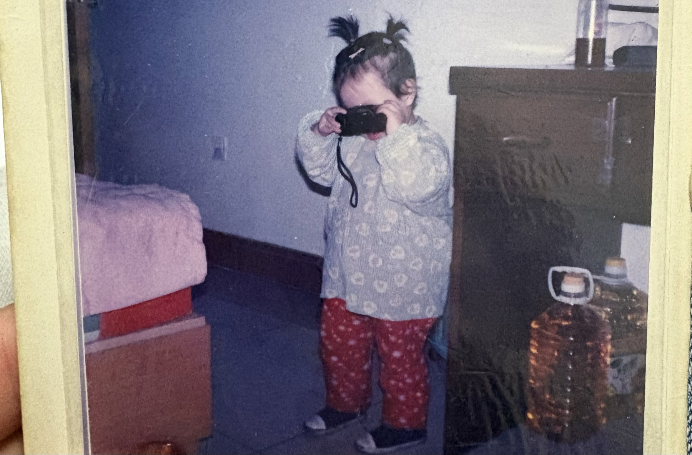

Hi, I'm May! I tell stories and I make things. Currently, I lead product marketing at Hypha 🌿
I write my own playbooks by uncovering the truth in things, which is why I'm drawn to building 0→1. Previously, I led marketing at Privy before Stripe acquired us, and was the founding PMM at Blockaid. In my past life, I made numbers tell stories at Oliver Wyman and the OW think tank.
When I'm not thinking about emerging tech, I make short films about people I admire and things I love. If you're in NYC, come to my salsa class 💃 or one of my co-creation hours 🎨
If you're still here, enjoy my writings on tech and culture on Substack.